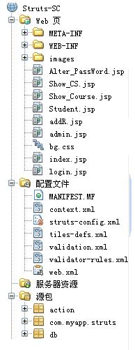

提取相应的用户信息，并通过配置文件找到相应的路径，
由相应的action进行跳转处理；form表单是和用户在浏览器上输入的信息相对的。
处理不同页面间业务逻辑任务，实现页面间信息的交互跳
转。当用户提交了一个form之后，可能会有多种行为，而此时用formAction来处理
不同行为所产生的结果，查询服务器中数据库，并做出相应的回应跳转。
配置form表单文件，相关路径的配置；form表单可以动态生成（具体
下边会详细讲解）。
直接可以呈现给用户的视图层文件。
在form表单和formAction中起着桥梁作用。因为一个form可能会
对应着多个formAction，需要有个句柄对象，来供不同的formAction操作。
其中config-struts是关键！！！
其实，FormTo可以不用。尤其是在 action 中转发的动作比较多时，用起来反而不方便。
下图是笔者在做学生选课系统时，采用Struts框架整体结构的截图：
注释：选择NetBeans工具，配置文件目录下的文件除了struts-config.xml是手工配置外，其他的都是自动的生成；源包目录下的第二项也是自动生成的。